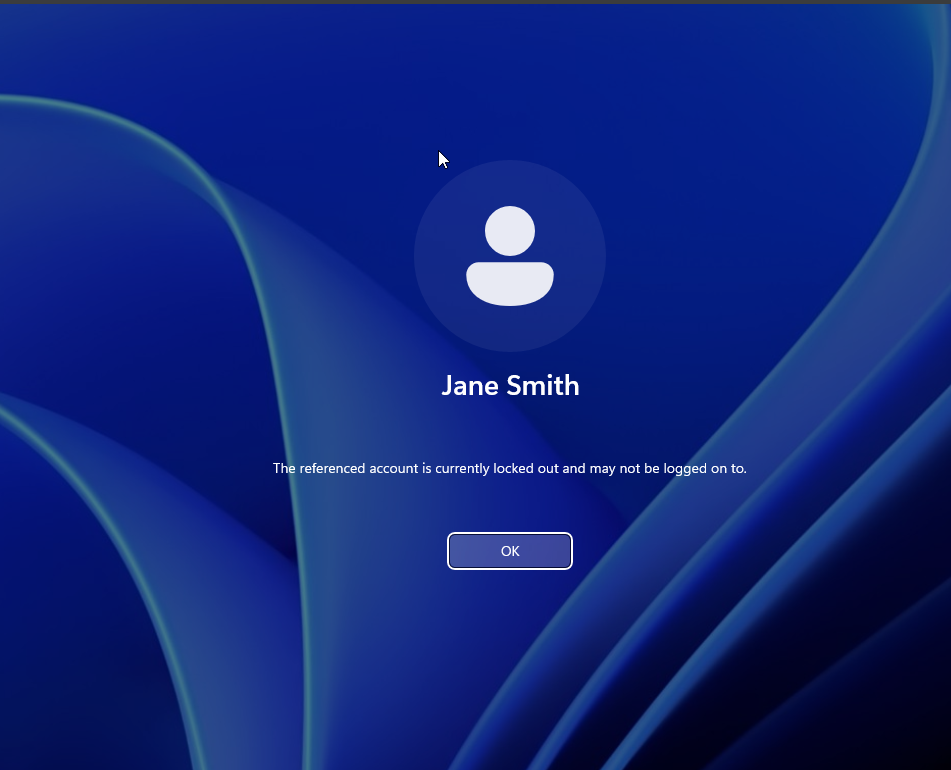

Problem #1: Account Locked Out
Initial Call
User: Jane Smith
Issue: Unable to log in to workstation
Error Message: "The referenced account is currently locked out and may not be logged on to."
This is one of the most common Service Desk issues. Account lockouts typically occur after multiple failed login attempts, which is a security measure to prevent brute force attacks.
The Solution
Step 1: Access Active Directory
Log into the Windows Server and open Active Directory Users and Computers:
Start → Administrative Tools → Active Directory Users and ComputersAlternative methods:
- Press
Windows Key + Rand type:dsa.msc - Use Server Manager → Tools → Active Directory Users and Computers
Step 2: Locate the User Account
In Active Directory Users and Computers:
- Right-click on the Users container (or the appropriate Organizational Unit)
- Select Find...
- Type "Jane Smith" in the search field
- Click Find Now
Alternative method: Navigate directly to the OU where the user account resides if you know the organizational structure.
Step 3: Reset Password and Unlock Account
Once you've located Jane Smith's account:
- Right-click on Jane Smith
- Select Reset Password
- A new window will appear with the following options:
Configure the following settings:
- New password: Enter a temporary password (e.g.,
Welcome123!) - Confirm password: Re-enter the temporary password
- ☑ User must change password at next logon (Check this box)
- ☑ Unlock the user's account (Check this box)
Click OK to apply the changes.
Step 4: Communicate with the User
Contact Jane and provide the following information:
- Inform her that her account has been unlocked
- Provide the temporary password securely (via phone or encrypted messaging)
- Explain that she will be required to change her password upon first login
- Remind her of the company's password policy requirements
Password Policy Reminder:
- Minimum 8 characters
- Must contain uppercase and lowercase letters
- Must contain at least one number
- Must contain at least one special character
Verification
Confirming Resolution
Follow up with Jane to ensure:
- She can successfully log in with the temporary password
- She was prompted to change her password
- Her new password meets the complexity requirements
- She has full access to her workstation and resources